Pref.Tools
Tools that are useful for analyzing preferences
Preferences and Voting
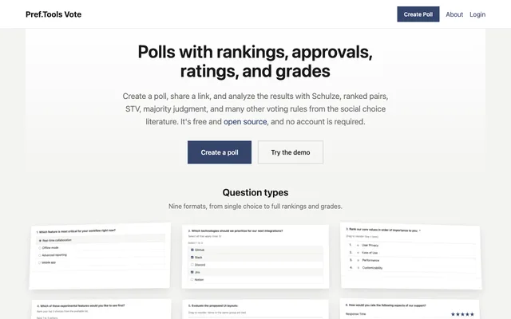
Vote Online polls with approval, ranking, and grade questions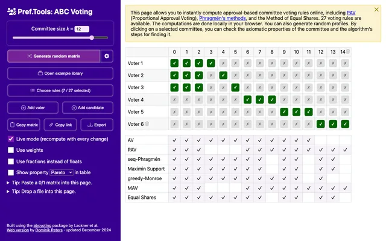
ABC Voting Approval-based committee voting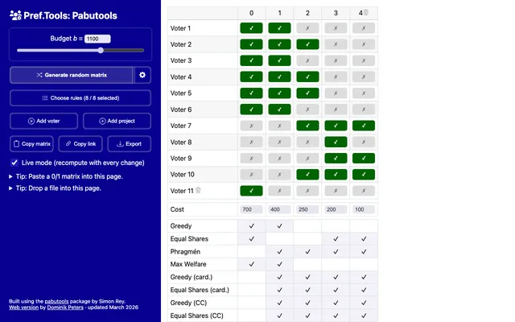
Pabutools Approval-based participatory budgeting rules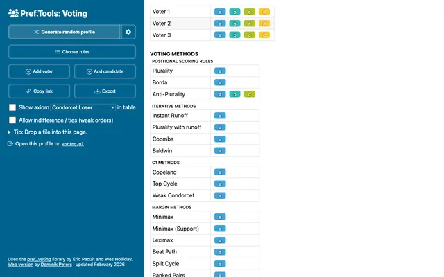
Preferential Voting Single-winner voting based on rankings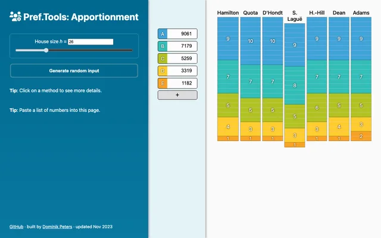
Apportionment Divisor and quota methods for allocating seats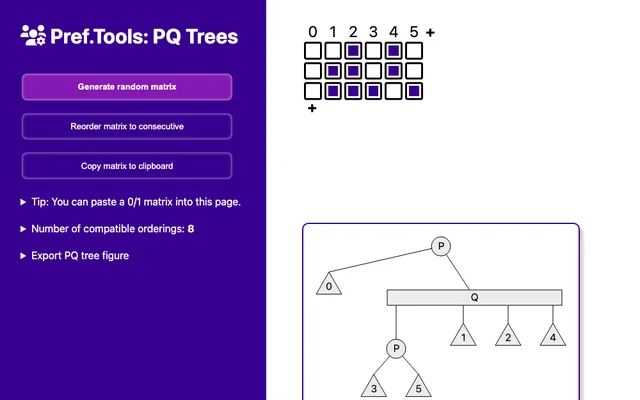
PQ-Trees Solver for consecutive ones problems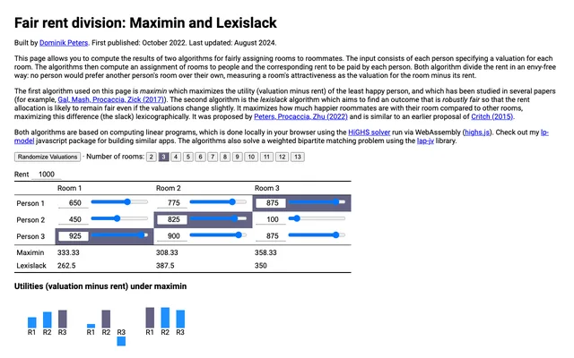
Fair Rent Division Maximin and Lexislack rent division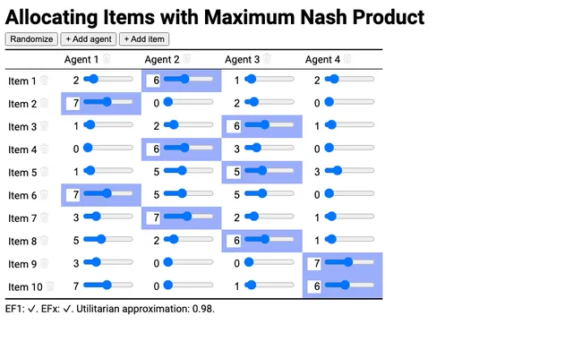
Maximum Nash Product Allocating indivisible items by maximizing the Nash productUtilities
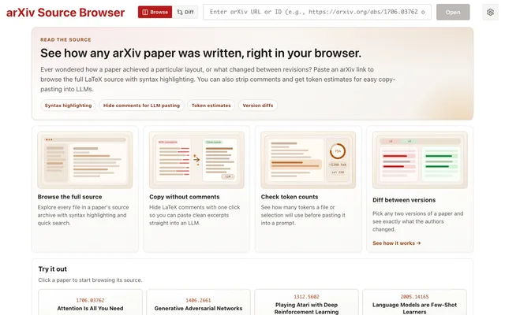
arXiv Source Browser Browse the LaTeX source of arXiv papers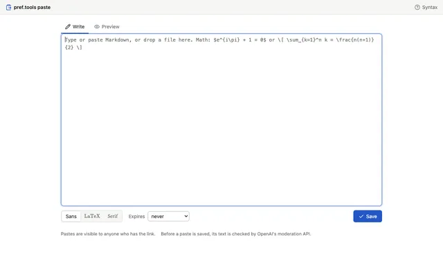
Paste Pastebin with Markdown and LaTeX math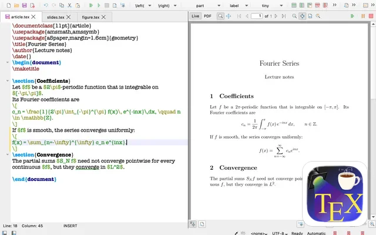
TeXstudio Espresso TeXstudio fork with a live preview based on TeXpresso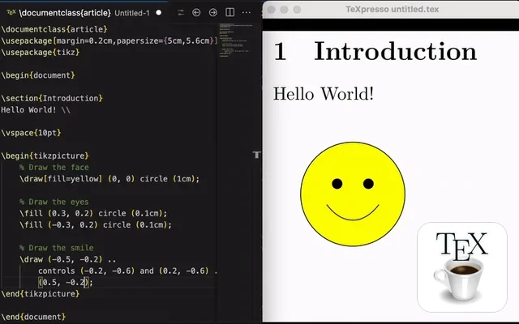
TeXpresso for VS Code Live LaTeX preview in VS Code with SyncTeX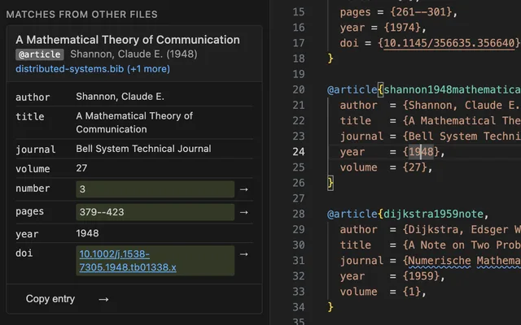
Bib Indexer VS Code extension to search and merge BibTeX entries across files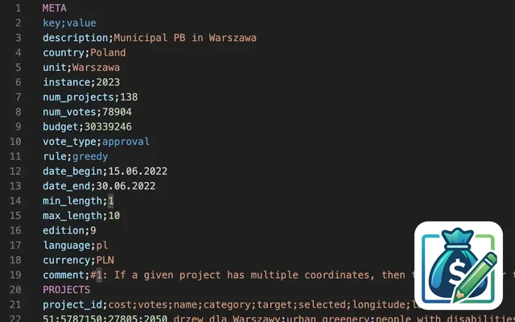
Pabulib (.pb) VS Code language support for the Pabulib participatory budgeting formatbuilt by Dominik Peters · source · updated November 2026